Tabs
Peers in a row, one of them current: the account's pages, the networks of a cash out. A plain row on the page or a bar on its plate, a label, a glyph before it, a count. Everything on this page is drawn by design/system/components/tabs.css through index.css, the same file a screen will load.
Anatomy
| Part | Class or element | What to change there |
|---|---|---|
| The row | .tabs | the hairline under the row (--line-soft), the gap between peers; the row scrolls sideways rather than wrapping |
| A tab | .tabs__t on a link, a button or, for the current page, a span | the height (the 44px press, --size-tap), the sides, the label's size and weight, its quiet ink (--text-body) |
| Current | [aria-current="page"] on a link or a span, [aria-selected="true"] on a button | the white ink and the pink under the tab (--bg-lit); set by the product, never by a class |
| Glyph | .icon inside the tab | the mark before the label; takes the tab's ink, 18px on a plate |
| Count | .tabs__n on a Badge | the floor of the badge's width (--size-badge) so a one digit count does not squeeze |
| Plate | .tabs--plate | the bar under the account's band: its ground, its edge, its rounded foot and the pink glow from the current tab's foot |
Variants and sizes
One size and two axes. The height of a tab is --size-tap, 44px, because a tab is pressed with a thumb; there is no small tab. The measured figure below is read from the render, not from the stylesheet.
- Ground = where the row stands. Plain is a row on the page, with a hairline under it. A plate (
--plate) is the bar that closes a band, the account head's: it carries the plate ground, its edge and shadow, and the current tab lights from its foot. It stands only under a band, never in the middle of a page. - Content = what a tab carries. A label always. A glyph before it on the plate, where each page has a mark. A count in a Badge where the grey has one. The current tab is a span where the page is the one you are on (D-58: the current one is not a link), a link or a button elsewhere.
- Width = the row, not the tab. A tab never stretches; a row that is wider than its container scrolls sideways.
| Ground | Current tab | Other tab | Where it stands |
|---|---|---|---|
| Plain | the cash out's network | ||
| Plate | the account head, under its band |
The plate variant is the account head's own rules (.account-head > .tabs, rename map row 27) turned into a variant of the atom: its computed style equals what the account head draws today, apart from the tile edge's step from 5% to 7% (D-260, Q1), which the plate's shadow reads through --depth-shell.
When to use
Tabs switch between sibling views of one subject while the person stays in it: the account's four pages under the band (My items, History, Profile, Settings), the three networks of a crypto cash out. The row tells where you are before it tells where you could go, so the current tab is lit and the others are quiet. Words are the screen's nouns as microcopy gives them ("My items", "History", "Network"), never a verb: a tab shows a view, it does not do anything.
Rule and anti-rule
Use it
The account's four pages: the same band above them, one of the four current, the others a tap away. Or the networks of a cash out, where picking one changes the address the screen asks for.
Take another component
Choosing one value of a few, such as how many cases to open, a preset amount or the sort key, is a Segmented control. A destination of the whole site is the Rail. Going somewhere else is a Text link. An act is a Button.
States
Live at rest, on this page's theme: point at them, press them, reach them with Tab. The current tab is set by the product (aria-current, aria-selected) and is not a pointer state, so it is shown at rest above and not shot.
Snapshots of the same instances, dark on the left and light on the right, taken with reduced motion so each shows the face the state settles on. The base set is shot once on a plain tab that is not current; after it, only a named difference.
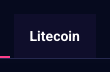
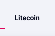
--bg-hover, --text-hi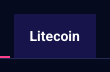
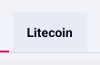
--bg-active, --text-hi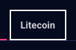
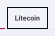
--line-focus, inside the tab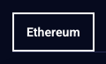
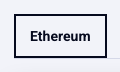
--line-focus, --bg-lit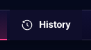
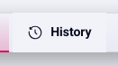
--bg-hover, --text-hi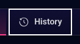
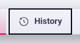
--line-focus- The same answer, said once: active on the plate is the same
--bg-activeground as on the plain row, and a button tab answers as a link tab does. A tab that is current has no hover, no press: it is already lit, and a span is not pressed at all (D-58). - New at this step.
kit.cssdrew no hover or press on tabs; the two states here are the state tokens of D-263 applied to a peer in a row, a ground and a white ink. Nothing else moves, no border is added and the pink under the current tab stays where it is. - No disabled look. A tab that cannot open stays live and refuses with its reason beside it (D-58).
node design/kit/tools/shoot-states.js http://localhost:8765/ tabs # re-shoot after a change to tabs.css or its tokens node design/kit/tools/shoot-states.js http://localhost:8765/ tabs --check # step 9: fails if a snapshot drifted
In the code
| Token | Kind | Dark | Light |
|---|
Read live from tokens.css. No component token and no colour primitive: every colour is a role. Geometry (--size-tap, --size-badge, --radius-l, --space-*) and type come straight from the primitives. The plate's pink glow is the lit mark --bg-lit at 22% over transparent, mixed in the rule.
File: design/system/components/tabs.css, loaded by design/system/index.css in the atoms' group.
<nav class="tabs" aria-label="Network"> <button class="tabs__t" type="button" aria-selected="true">Ethereum <span class="badge badge--status tabs__n">ETH</span></button> <button class="tabs__t" type="button" aria-selected="false">Litecoin</button> </nav> <nav class="tabs tabs--plate" aria-label="Account"> <span class="tabs__t" aria-current="page"><i class="icon icon--box" aria-hidden="true"></i>My items</span> <a class="tabs__t" href="history.html"><i class="icon icon--history" aria-hidden="true"></i>History</a> </nav>
Stands on: My items. The other seven coloured screens do not wear it. Until step 8 My items still reads kit.css; step 6 moves its markup onto this file's forms by the rename map (row 27: the account head's .tabs rules become .tabs--plate).